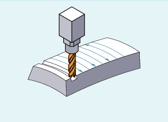

For this type of 3D milling, you require the line-by-line description of the 3D paths on the workpiece surface. The tool shape and dimensions are taken into account in the calculations, which are normally performed in CAM. The postprocessor writes to the part program - in addition to NC blocks - the tool orientations (for active 5-axis transformation) and the G command for the required 3D tool offset. This means that the machine operator has the possibility of using tools that are slightly smaller - deviating from the tool used to calculate the NC paths.
Face milling
The approach behavior is always NORM for the 3D variant of the tool radius compensation.
Outside corners are treated as circles with radius 0 for face milling, whereby the circle plane extends from the end tangent of the first block to the start tangent of the second block. In this way, the orientation can be changed during block transition. A circle is therefore always inserted as contour element at an outside corner. The intersection procedure is not available with face milling.
The ORIC and ORID G commands are used to determine whether changes in orientation programmed between two blocks forming the corner are executed before the inserted circle block (ORID) is processed or at the same time (ORIC).
3D tool radius compensation referring to a differential tool is selected using the CUT3DFD command. It should be applied if the programmed contour refers to the center-point path of a standard tool, and a tool other than a differential tool is used for machining. When calculating the 3D tool radius compensation, only the wear value of the radius of the active tool ($TC_DP15) and any programmed tool offsets OFFN and TOFFR/TOFFLR are taken into account. The basic radius ($TC_DP6) of the active tool is not taken into account.
3D face milling with CUT3DFD is only possible in combination with "Smoothing of surface normals in 3D face milling". This is activated by calling the "Top Surface" function (requires a license) via CYCLE832(...). Activation must take place before the tool offset is activated with G41/G42; not directly before tool intervention, but rather one path length before that, which corresponds to approx. 1000 times the contour tolerance (e.g. 1000 x 0.01 mm = 10 mm). Deactivation must be executed in reverse order: First switch off the tool offset with G40, then deactivate with e.g. CUT2D (or similar) after a path length which corresponds with approximately 1000 time the contour tolerance.
In order to be able to use the "Smoothing of surface normals in 3D face milling", the "Interpolation of surface normals via polynomials" function must also be enabled:
MD28291 $MC_MM_SMOOTH_SURFACE_NORMALS = TRUE
| Note |
For 3D face milling with CUT3DFD in combination with "Top Surface", the setting recommendations regarding "Top Surface" must be observed. A special test program is provided in the SIOS portal for checking the set data. → |
See also:
CYCLE832 - High-Speed Settings